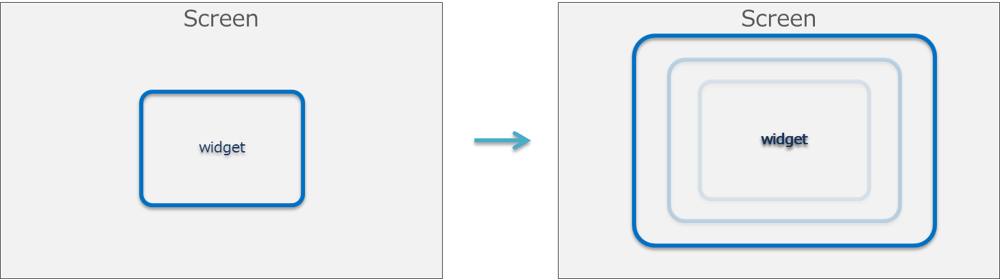
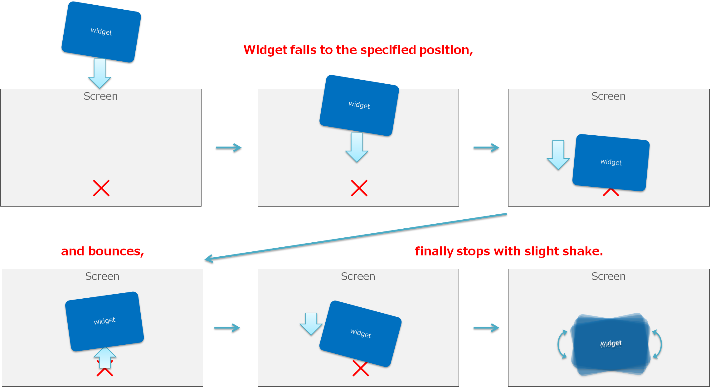

Effect クラス、Transition クラスの概要と使用方法について解説します。 CatalogSample も並行して参照してください。
Contents
Effect は、Scene に配置されている個々の Widget に対して、スライドアニメーションやフェードインといった演出効果を付与するためのクラスです。
Effect は下記のようにして利用します。
SlideOutEffect effect = new SlideOutEffect(this, 300); effect.EffectStopped += HandleEffectEffectStopped; effect.Start();Effect オブジェクトの Start() メソッドを呼び出すと、UISystem にその Effect オブジェクトが登録されます。
UISystem は、UISystem.Update() が呼び出されるタイミングで、登録済みの Effect オブジェクトの更新処理を行います。各 Effect が終了条件に達すると、Effect の終了ハンドラ EffectStopped() が呼び出され、UISystem への登録が解除されます。なお、このタイミングでは Effect に対して明示的に Dispose() メソッドは呼び出されません。
また、Effect に対して、明示的に Stop() メソッドを呼び出した場合も同様で、終了ハンドラ EffectStopped() の呼び出しと UISystem からの登録解除が行われます。
Effect クラスは独自に作成・カスタマイズすることも可能です。以下では、標準で用意している Effect について説明していきます。
SlideInEffect は、指定した Widget を画面の外から X、Y プロパティで指定した位置に移動させる Effect です(図1)。SlideOutEffect は逆に、指定した Widget を X Y プロパティで指定した位置から画面の外へ移動させる Effect です(図1)。 Visible プロパティが false の時は ture に変更されて Effect が実行されます。 移動する際のアニメーションカーブは変更可能です。
SlideInEffect slideInEffect = new SlideInEffect(); slideInEffect.Start();
図1 SlideInEffect と SlideOutEffect
いわゆるフェードイン、フェードアウトを行う Effect です(図2)。 Alpha プロパティが現在の値から 255 もしくは 0 に遷移します。 FadeInEffect の場合、現在の Visible プロパティは true にします。 FadeOutEffect の場合、Effect 終了時には、Visible プロパティを false にし、Alpha プロパティは 255 にリセットされます。

図2 FadeInEffect と FadeOutEffect
指定した拡大率に Widget を拡大・縮小させる Effect です(図3)。 拡大・縮小にかける時間と、補間関数を指定することが可能です。
図3 ZoomEffect
currentWidget と nextWidget の2つの Widget を指定可能な Effect で、currentWidget が画面手前方向にジャンプして回転し、nextWidget に切り替わります(図4)。

図4 JumpFlipEffect
指定した Widget が画面外上方から、Widget を配置した位置に向かってスライドして移動する Effect です(図5)。 バンジージャンプのように、ある程度跳ねた後に、配置した位置に静止します。 跳ねる度合いを Elasticity の値で調節することが可能です。 Dialog などを表示する際に利用することを想定しています。
図5 BunjeeJumpEffect
指定した Widget が傾きながら落下するように移動する Effect です(図6)。 落下する方向も指定することができます。 BunjeeJumpEffect で表示した Dialog を、TiltDropEffect で画面外に移動させる、というように組み合わせても面白いでしょう。

図6 TiltDropEffect
currentWidget と nextWidget の2つの Widget を指定することが可能な Effect で、フリップ時計のように、currentWidget が上下の中心で半分に折れ、回転し、nextWidget が裏から現れます(図7)。 時計やテキスト表示、写真のスライドショーなどへの応用を想定しています。

図7 FlipBoardEffect
Transition は、Scene を切り替える際に演出効果を付与するためのクラスです。
Transition は下記のようにして利用します。
Scene nextScene = new Scene(); CrossFadeTransition transition = new CrossFadeTransition(); transition.TransitionStopped += HandleTransitionStopped; UISystem.SetScene(nextScene, transition);もしくは下記のようにしても利用可能です。
Scene nextScene = new Scene(); CrossFadeTransition transition = new CrossFadeTransition(); transition.TransitionStopped += HandleTransitionStopped; nextScene.Transition = transition; UISystem.SetScene(nextScene);Transition クラスは独自に作成・カスタマイズすることも可能です。以下では、標準で用意している Transition について説明していきます。
SlideInEffect、SlideOutEffect と同様の効果を持つ Transition です。
現在表示されている Scene を押し出すように新しい Scene が移動する Transition です。
現在表示されている Scene がフェードアウトすると同時に、新しい Scene がフェードインする Transition です。 現在表示されている Scene と新しい Scene のどちらを前面にするかを、NextSceneForward プロパティで設定することが可能です。
JumpFlipEffect と同様の効果を持つ Transition で、画面手前方向にジャンプして回転して新しい Scene に切り替わります。
BunjeeJumpEffect と同様の効果を持つ Transition です。
TiltDropEffect と同様の効果を持つ Transition です。
FlipBoardEffect と同様の効果を持つ Transition です。